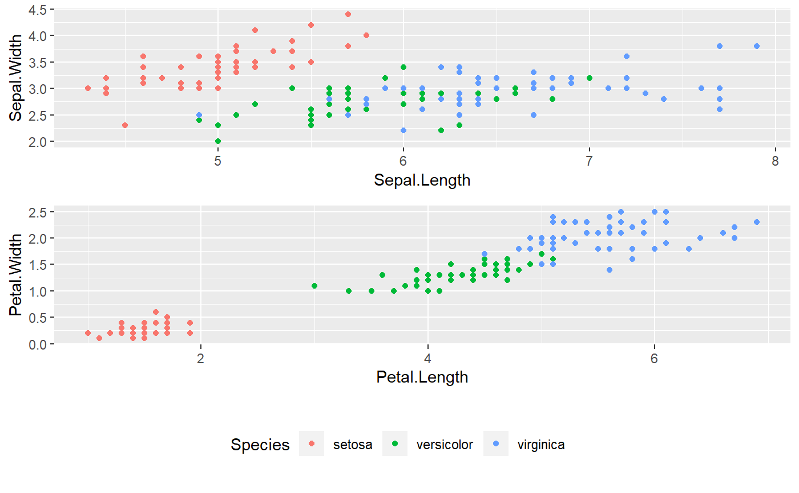

Extract the legend of a ggplot2
get_legend(p)
| p | a ggplot with a legend |
|---|
Could be combined with multiplot (see examples).
Adapted from http://stackoverflow.com/questions/12539348/ggplot-separate-legend-and-plot
https://github.com/hadley/ggplot2/wiki/Share-a-legend-between-two-ggplot2-graphs
require(ggplot2) p1 <- ggplot(iris) + aes(x = Sepal.Length, y = Sepal.Width, color = Species) + geom_point() + theme(legend.position = "bottom") p2 <- ggplot(iris) + aes(x = Petal.Length, y = Petal.Width, color = Species) + geom_point() # get legend from p1 l <- get_legend(p1) # remove legends p1 <- p1 + theme(legend.position = "none") p2 <- p2 + theme(legend.position = "none") # Combining multiplot(p1, p2, l, heights = c(2, 2, 1))